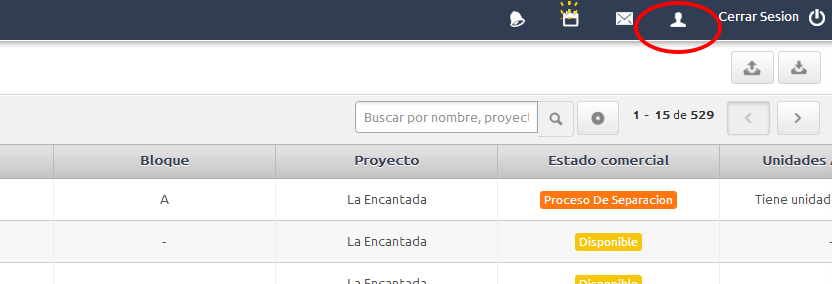
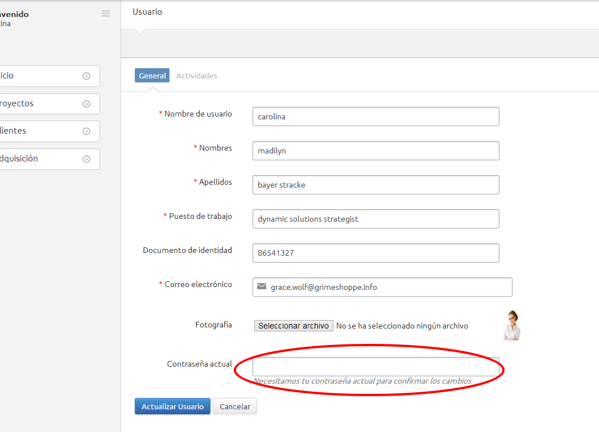

Todo usuario puede editar su perfil. Para hacerlo sólo debe hacerle click al ícono en forma de persona en la parte superior derecha.

Al editar su perfil, deberá llenar todos los campos obligatorios, podrá seleccionar un archivo para actualizar su foto de perfil. Y deberá asegurarse de colocar su contraseña actual antes de presionar el botón de actualizar.
